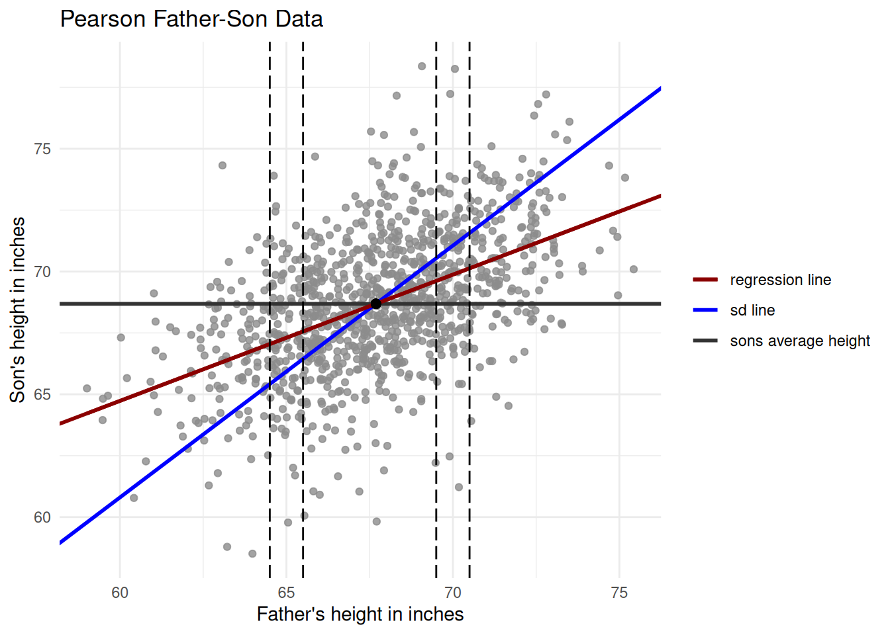
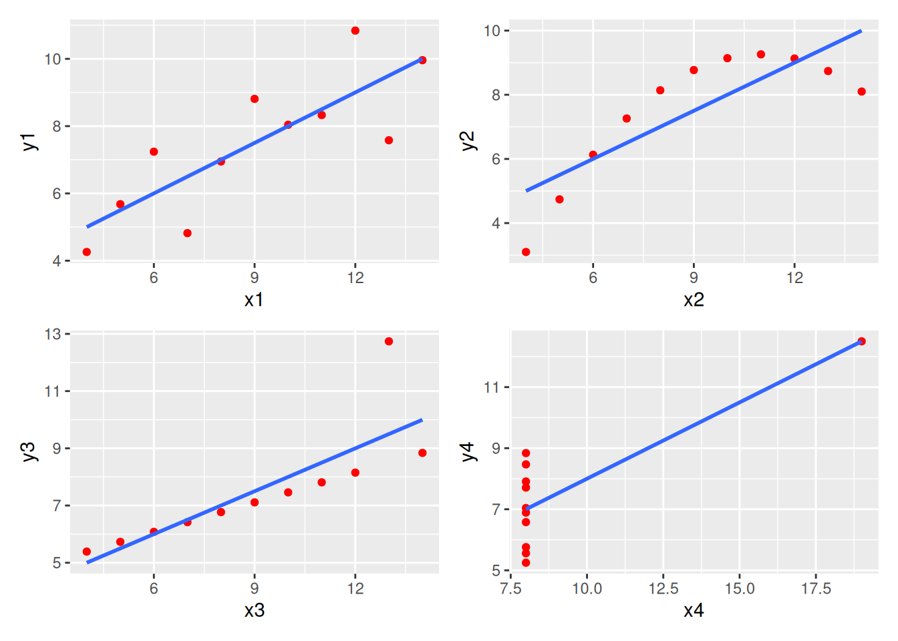
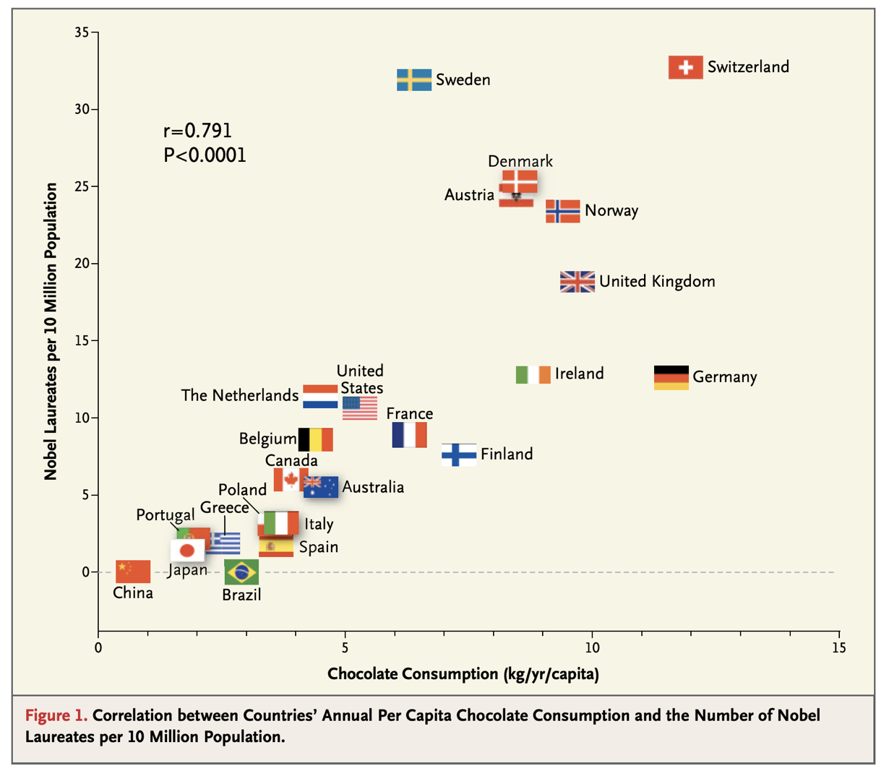

Simple Linear Regression
[DRAFT, IN PROGRESS]
Introduction
As is often true, there is an xkcd cartoon that is appropriate:

We have a set of points to which we want to fit a straight line (not a constellation!!)
\[ y = \beta_0 + \beta_1 x \]
There are \(n\) subjects indexed by \(i\), where \(i = 1, \ldots, n\). We have two data variables \(x\) and \(y\), where \(x\) is called the predictor and \(y\) is called the response.
Example 1 (Galton and Pearson’s original example) The first person to identify and investigate the phenomenon of regression was the English scientist (well, polymath might be more accurate), Francis Galton. Regrettably, he was also the founder of eugenics, and was more generally interested in inheritance. He was probably as brilliant as his more well-known cousin, Charles Darwin, but is not as well-known. He was the first person to “use fingerprints in detective work”, among other things, but he is best known for his research into inheritance, and might also be considered one of the founders of statistics.
The question that he and his student, Karl Pearson, asked was: “Can we use the height of the father to predict the height of the son?”
- 2 data variables \(x\) and \(y\)
- \(x_i\) is the height of the father in family \(i\)
- \(y_i\) is the height of the son in family \(i\)
Here is a plot showing the famous father-son height data set (first collected by Pearson). Each point is a father-son pair. There are three lines, as you can see. The blue SD line is the line for which the slope is the standard deviation of the \(y\)-data (son’s heights) divided by the standard deviation of the \(x\)-data (father’s heights), whereas the dark red regression line has a flatter slope. This flattening is because the correlation is at most 1, and is called the Regression Effect. What is implies, for instance, is that if a father is \(n\) standard deviations above average, the son is predicted to be only \(r\times n\) standard deviations above average. That is, our prediction is closer to the mean, and this is why Galton called this phenomenon “regression to mediocrity, that is, to the middle*.
Note that each point \((x_i, y_i)\) represents a father–son pair; \(\bar{x} \approx 68''\), \(\bar{y} \approx 69''\), \(\mathrm{SD} \approx 3''\) for both;
The regression line approximates the average heights of the sons given the heights of their fathers. Geometrically, the dark red line above passes roughly through the centers of the vertical strips of the scatter plot.
Simple Linear Regression: The Model
The Statistical Model
\[ Y_i = \beta_0 + \beta_1 x_i + \epsilon_i, \quad i = 1, \ldots, n \]
We call it simple linear regression because there is only one predictor.
Assumptions
- \(\epsilon_i \overset{IID}\sim \mathcal{N}(0, \sigma^2)\) are iid random errors.
- \(x_i\) are not random — they are known constants, called covariates.
- \(\beta_0,\, \beta_1,\, \sigma^2\) are the unknown parameters of the model that we will need to estimate from our data.
Implications of the model:
Since the \(x_i\) are not random, the only randomness, according to our model, comes from the IID errors, which are normally distributed with mean \(0\). Since, by the model, \[ \begin{align*} Y_i &= \beta_0 + \beta_1 x_i + \epsilon_i\\ \implies E(Y_i\mid x_i) &= \beta_0 + \beta_1 x_i + E(\epsilon_i)\\ &= \beta_0 + \beta_1 x_i. \end{align*} \] Further, the \(Y_i\) will be normally distributed with the same variance as the errors, so this means that for every \(i\), \(Var(Y_i) = Var(\epsilon_i) = \sigma^2\). Putting these statements together, we see that \(Y_1, Y_2, \ldots, Y_n\) are independent, with \[ Y_i \sim \mathcal{N}(\beta_0 + \beta_1 x_i,\; \sigma^2). \] We define \(\hat Y_i\) to be this expected value, so \(\hat Y_i = E(Y_i\mid x_i)\). Since the \(Y_i\) are normal, the sample mean \(\bar Y\) must also be normal, with: \[ \bar{Y} \sim \mathcal{N}\!\left(\beta_0 + \beta_1 \bar{x},\; \frac{\sigma^2}{n}\right) \]
The true regression line is \(y = \beta_0 + \beta_1 x\). Our goal is to estimate this line from data, and use \(\sigma^2\), the variance of the errors, to compute the variance and SE of our estimates.
Estimating the intercept and slope (\(\beta_0\) and \(\beta_1\))
We minimize the sum of squared residuals (the squared loss function):
\[ S(\beta_0, \beta_1) = \sum_{i=1}^{n}(Y_i - \beta_0 - \beta_1 x_i)^2 = \sum_{i=1}^{n}(Y_i - \hat{Y}_i)^2 \]
where the model says \(Y_i = \beta_0 + \beta_1 x_i + \epsilon_i\), so the fitted value is \(\hat{Y}_i = \beta_0 + \beta_1 x_i = \mathbb{E}[Y_i \mid x_i]\).
Deriving \(\hat{\beta}_0\)
Differentiate with respect to \(\beta_0\) and set equal to zero:
\[ \frac{\partial S}{\partial \beta_0} = -2\sum_{i=1}^{n}(Y_i - \beta_0 - \beta_1 x_i) = 0 \]
\[ \Rightarrow \sum_{i=1}^{n}(Y_i - \hat{\beta}_0 - \hat{\beta}_1 x_i) = 0 \]
\[ \Rightarrow n\hat{\beta}_0 = \sum_{i=1}^{n} Y_i - \hat{\beta}_1 \sum_{i=1}^{n} x_i \]
\[ \boxed{\hat{\beta}_0 = \bar{Y} - \hat{\beta}_1 \bar{x}} \]
Deriving \(\hat{\beta}_1\)
Define \(x_i' = x_i - \bar{x}\) (shifting everything horizontally will not change \(\beta_1\), but will change \(\beta_0\), so call the new intercept \(\beta_0'\)). Note that \(\sum_{i=1}^{n} x_i' = 0\).
Differentiate with respect to \(\beta_1\) and set equal to zero:
\[ \frac{\partial S}{\partial \beta_1} = -2\sum_{i=1}^{n} x_i'(Y_i - \beta_0 - \beta_1 x_i') = 0 \quad \circledast \]
Replace \(x_i\) by \(x_i'\) (\(\beta_1\) does not change):
\[ \frac{\partial S}{\partial \beta_1} = 0 \;\Rightarrow\; \sum_{i=1}^{n} x_i' Y_i - \hat{\beta}_0' \underbrace{\sum_{i=1}^{n} x_i'}_{=\,0} - \hat{\beta}_1 \sum_{i=1}^{n}(x_i')^2 = 0 \]
This gives expression ①
\[ \hat{\beta}_1 = \frac{\displaystyle\sum_{i=1}^{n} x_i' Y_i}{\displaystyle\sum_{i=1}^{n}(x_i')^2} = \frac{\displaystyle\sum_{i=1}^{n}(x_i - \bar{x})\,Y_i}{\displaystyle\sum_{i=1}^{n}(x_i - \bar{x})^2} \tag{1} \]
Exercise 1 Show that expression (1) above equals expression (2) below:
\[ \boxed{ \hat{\beta}_1 = \frac{\displaystyle\sum_{i=1}^{n}(x_i - \bar{x})(Y_i - \bar{Y})}{\displaystyle\sum_{i=1}^{n}(x_i - \bar{x})^2} } \tag{2} \]
(Hint: show \(\sum(x_i-\bar x)\bar Y = 0\).)
Equivalent formula via sample correlation
Plugging in sample values, the estimates can be written as
\[ \hat{\beta}_0 = \bar{y} - \hat{\beta}_1 \bar{x}, \qquad \hat{\beta}_1 = r \cdot \frac{s_y}{s_x}, \]
where \(r = r(x, y)\) is the sample correlation coefficient, and \(s_x\) and \(s_y\) are the sample standard deviations. So we can see that for simple linear regression, the line depends on five quantities: the sample means and the sample sd’s of \(x\) and \(y\), and their sample correlation. It is very easy to just write down the slope and the intercept but you should always…
Warning
Look at the data first!
Example 2 (Anscombe’s Data Quartet) Always inspect the data before performing a regression. “Anscombe’s Quartet”, shown below, consists of four datasets with identical \(\hat\beta_0\), \(\hat\beta_1\), and \(r^2\), and therefore all have the same fitted line, The data have radically different shapes, though — only one of which, the top left, is actually suited to a linear model.

Uses of Linear Modeling
Most uses of linear models fall into three categories:
Summarizing associations: What is the relationship between the number of rooms in a house and its market value?
Estimating/predicting the response: A house is going on the market. Given its attributes, what will it sell for?
Causal inference: By how much will the resale price of my house increase if I build an extension and add one room?
Example 3 (Chocolate Consumption and the Nobel Prize)

From Messerli (2012), “Chocolate consumption, cognitive function, and Nobel laureates,” New England Journal of Medicine. The author fit a linear model with slope \(\approx 2.5\).
What is the model good for?
Summarizing an association: Each additional kg of annual per-capita chocolate consumption is associated with 2.5 extra Nobel laureates per 10 million population.
Prediction: India’s 2017 per-capita chocolate consumption was about 0.1 kg, so the model predicts roughly one Nobel laureate per 40 million Indian residents.
Causal inference: If Americans ate an extra kilogram of chocolate per year, the Nobel prize rate would increase by 2.5 per 10 million. (This interpretation is clearly unreasonable — correlation \(\neq\) causation!)
Statistical Properties of \(\hat{\beta}_0\) and \(\hat{\beta}_1\)
Since both \(\hat{\beta}_0\) and \(\hat{\beta}_1\) are linear functions of the \(Y_i\), we have
\[ \hat{\beta}_j \sim \mathcal{N}\!\left(E(\hat{\beta}_j),\; \mathrm{Var}(\hat{\beta}_j)\right), \quad j = 0, 1. \]
Theorem 1 (Theorem A (p. 548)) The OLS estimators are unbiased:
\[ E(\hat{\beta}_0) = \beta_0 \qquad \text{and} \qquad E(\hat{\beta}_1) = \beta_1. \]
(Proof: exercise.)
Theorem 2 (Theorem B (pp. 548–549)) \[ \mathrm{Var}(\hat{\beta}_0) = \frac{\sigma^2 \displaystyle\sum_{i=1}^{n} x_i^2}{n\displaystyle\sum_{i=1}^{n} x_i^2 - \left(\displaystyle\sum_{i=1}^{n} x_i\right)^2} \]
\[ \mathrm{Var}(\hat{\beta}_1) = \frac{n\sigma^2}{n\displaystyle\sum_{i=1}^{n} x_i^2 - \left(\displaystyle\sum_{i=1}^{n} x_i\right)^2} \]
\[ \mathrm{Cov}(\hat{\beta}_0, \hat{\beta}_1) = \frac{-\sigma^2 \displaystyle\sum_{i=1}^{n} x_i}{n\displaystyle\sum_{i=1}^{n} x_i^2 - \left(\displaystyle\sum_{i=1}^{n} x_i\right)^2} \]
Proof. Define \(a_i = x_i - \bar{x}\) and \(A = \displaystyle\sum_{i=1}^{n} a_i^2 = \sum_{i=1}^{n}(x_i-\bar{x})^2\).
We will compute the variances in terms of \(a_i\) and \(A\).
From the formula for \(\hat{\beta}_1\), with \(a_i = x_i - \bar{x}\) and \(A = \sum a_i^2\):
\[ \hat{\beta}_1 = \frac{\displaystyle\sum_{i=1}^{n} a_i Y_i}{A} \]
Since the \(Y_i\) are independent with \(\mathrm{Var}(Y_i) = \sigma^2\):
\[ \mathrm{Var}(\hat{\beta}_1) = \frac{1}{A^2}\sum_{i=1}^{n} a_i^2\,\sigma^2 = \frac{\sigma^2}{A} = \frac{\sigma^2}{\displaystyle\sum_{i=1}^{n}(x_i - \bar{x})^2} \]
This agrees with the expression in Theorem B using the identity
\[ \sum_{i=1}^{n}(x_i - \bar{x})^2 = \sum_{i=1}^{n} x_i^2 - n\bar{x}^2, \qquad n\bar{x} = \sum_{i=1}^{n} x_i. \]
Exercise 2 Use the variance of \(\hat{\beta}_1\) to derive the variance of \(\hat{\beta}_0\) and the covariance \(\mathrm{Cov}(\hat\beta_0, \hat\beta_1)\).
Exercise 3 Show that \(\mathrm{Cov}(\bar Y,\hat\beta_1)=0\).
More About \(\hat{\beta}_1\)
If \(Y_i \sim \mathcal{N}(\beta_0 + \beta_1 x_i,\, \sigma^2)\), then
\[ \hat{\beta}_1 \sim \mathcal{N}\!\left(\beta_1,\; \frac{\sigma^2}{\sum_{i=1}^{n}(x_i - \bar{x})^2}\right). \]
Inference About \(\beta_1\)
Estimating \(\sigma^2\)
We need to estimate \(\sigma^2\). Define the Residual Sum of Squares using our observed error \(=y_i-\hat y_i\), which we call the residual
\[ RSS = \sum_{i=1}^{n} \hat{e}_i^2, \qquad \hat{e}_i = = y_i-\hat y_i = y_i - \hat{\beta}_0 - \hat{\beta}_1 x_i \quad (\text{estimated error / residual}) \]
Use
\[ s^2 = \frac{RSS}{n - 2} \]
as an estimate for \(\sigma^2\). We divide by \(n-2\) because we use 2 estimates (\(\hat\beta_0\) and \(\hat\beta_1\)) in computing \(s\).
Confidence Interval for \(\beta_1\)
The estimated standard error of \(\hat\beta_1\) is
\[ s_{\hat\beta_1} = \frac{s}{\displaystyle\sqrt{\sum_{i=1}^{n}(x_i - \bar{x})^2}} \]
Then
\[ t = \frac{\hat{\beta}_1 - \beta_1}{s_{\hat\beta_1}} \sim t_{n-2} \]
A \((1-\alpha)100\%\) confidence interval for \(\beta_1\):
\[ \boxed{\hat{\beta}_1 \pm t_{\alpha/2,\, n-2} \cdot s_{\hat\beta_1}} \]
Hypothesis Test for \(\beta_1\)
To test \(H_0: \beta_1 = 0\) vs \(H_1: \beta_1 \neq 0\), use
\[ t = \frac{\hat{\beta}_1 - 0}{s_{\hat\beta_1}} \]
If we reject \(H_0\), we conclude that \(x\) has predictive value — i.e. there exists a linear relationship between \(x\) and \(Y\).
Correlation Analysis and the Regression Effect
Define the sample variances and covariance:
\[ s_{xx} = \frac{1}{n-1}\sum_{i=1}^{n}(x_i - \bar{x})^2, \qquad s_{yy} = \frac{1}{n-1}\sum_{i=1}^{n}(y_i - \bar{y})^2, \qquad s_{xy} = \frac{1}{n-1}\sum_{i=1}^{n}(x_i - \bar{x})(y_i - \bar{y}). \]
The sample correlation coefficient is
\[ r = \frac{s_{xy}}{\sqrt{s_{x}\, s_{y}}} %= \frac{1}{n}\sum_{i=1}^{n} %\frac{x_i - \bar{x}}{\sqrt{s_{xx}}} %\cdot %\frac{Y_i - \bar{Y}}{\sqrt{s_{yy}}}. \]
Note that the slope estimator can be written as
\[ \hat{\beta}_1 = \frac{\displaystyle\sum_{i=1}^{n}(x_i-\bar{x})(Y_i-\bar{Y})}{\displaystyle\sum_{i=1}^{n}(x_i-\bar{x})^2} = \frac{s_{xy}}{s_{xx}} = \frac{r\sqrt{s_{xx}\,s_{yy}}}{s_{xx}} = r\sqrt{\frac{s_{yy}}{s_{xx}}}. \]
The fitted line can therefore be rewritten in the symmetric form (§14.2.3):
\[ \hat{Y} - \bar{Y} = r \cdot \sqrt{\frac{s_{yy}}{s_{xx}}} \cdot (x - \bar{x}) \]
This exhibits the regression effect (“regression to mediocrity”): since \(|r| \leq 1\), the regression line is always flatter than the SD line. A father who is 1 SD above the mean in height will have a son predicted to be only \(r\) SDs above the mean — not a full SD.
Notes and Cautions
Since one assumption of the SLR model is that \(Y \mid x\) is normal, we can make probability statements:
\[ P(Y \leq y \mid x) \approx \Phi\!\left(\frac{y - \hat{E}(Y|x)}{\hat{\sigma}}\right). \]
\(r^2\) (or \(R^2\)) is the coefficient of determination — the proportion of variability in the response explained by the model.
Common pitfalls:
- Regression fallacy: Do not impute important causes to the regression effect (e.g., the Sports Illustrated cover jinx, test–retest regression).
- Extrapolation: Do not predict beyond the range of the observed \(x\)-values.
- Outliers: Re-run the regression with and without outliers to assess their influence.
- Nonlinearity: Do not fit a straight line to a clearly nonlinear relationship.
- Homoscedasticity: The SLR model assumes the error variance \(\sigma^2\) is constant (does not depend on \(x\)). If the data are heteroscedastic, estimated standard errors and confidence intervals will be unreliable.
- Two regression lines: Note that the regression of \(Y\) on \(x\) and the regression of \(x\) on \(Y\) give different lines (they coincide only when \(|r| = 1\)).
Always examine residual plots (\(\hat{e}_i\) vs \(x_i\)) — they reveal nonlinearity, outliers, and heteroscedasticity far more clearly than the original scatter plot. Refer to Philip Stark’s online text SticiGui for more details.
Regression in R: Problem 14.36
The dataset bismuth contains the transition pressure (bar) of the bismuth II–I transition as a function of temperature (°C). Fit a linear model and examine residuals.
In R:
lm(y ~ x, data = bismuth)Output:
References
Adhikari, Ani. 2012. “STAT 135 Notes.” Notes (shared privately).
Pimentel, Sam. 2024. “STAT 135 Lecture Slides.” Lecture slides (shared privately).
Rice, John A. 2006. Mathematical Statistics and Data Analysis. 3rd ed. Duxbury Press.